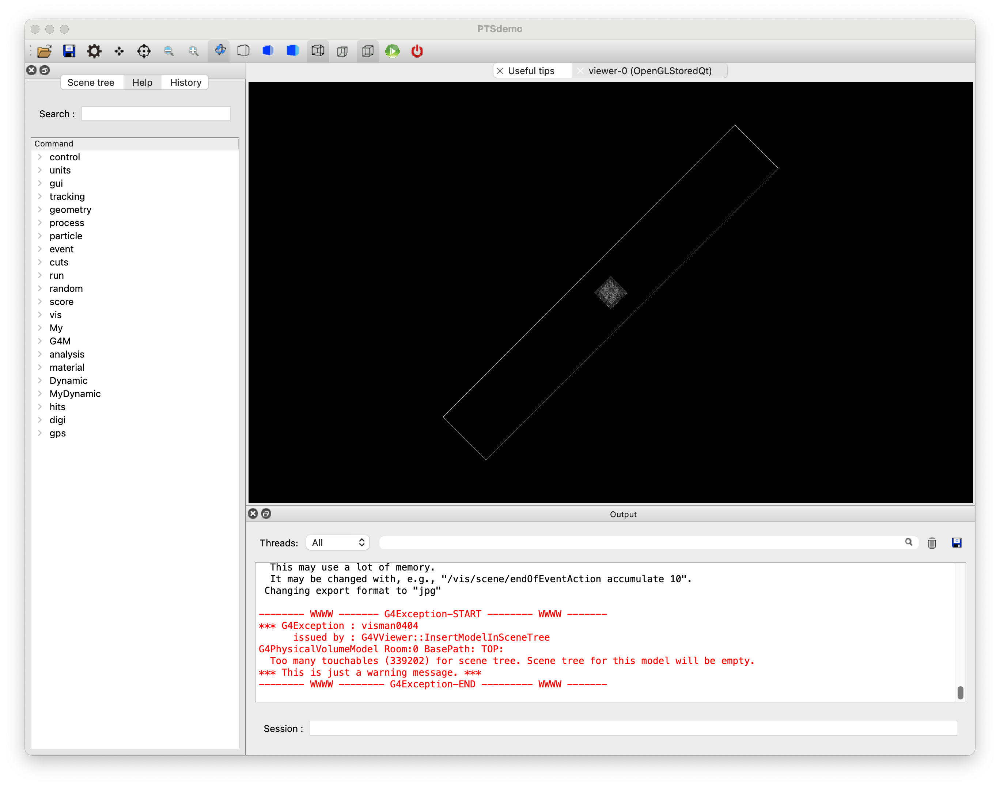

Example A5(DICOM-CTジオメトリ）
シミュレーション空間にDICOM-CTデータを元にした患者ジオメトリを配置します。
入力ファイルの作成
DICOM-CTデータのリストファイル(DICOM.dat)
CT値から質量密度への変換テーブル(CT2Density.dat)
CT値範囲に対応する物質割当てテーブル(CT2G4WATER.dat)
DICOMビームモジュールの登録と設定操作
実行用マクロファイル(exampleA5.mac)
DICOMビームモジュールのスコア
DICOM-CTジオメトリは、ボクセルジオメトリとして構築されます。
CT画像のHUから物質への変換には、いくつかの選択オプションがあります。
はじめにCT値から水等価患者モデルを構築するマクロファイルを示し、その中で使用されている入力ファイルを例を上げて説明します。また、オプションとしての選択肢について解説していきます。
サンプルDICOM-CTデータとして、水ファントムのデータを用います。こちらからダウンロード ダウンロードしたファイルを展開してください。ここでは、ホームディレクトリにデータを展開する想定で解説します。(DICOM-CTデータには、パスワードが設定されています。）
ダウンロードしたファイルが、拡張子.zipの場合
$ cd
$ gunzip ~/Downloads/DICOM_WP_Dist.zip
$ ls
DICOM_WP_Dist
ダウンロードしたファイルが、拡張子.tar.gzの場合
$ cd
$ tar zxvf ~/Downloads/DICOM_WP_Dist.tar.gz
$ ls
DICOM_WP_Dist
以下、PTSIMの実行ディレクトリ(例: ~/PTSproject-install/PTSapps/DynamicPort)で作業します。
PTSIMの実行デイレクトりに移動して、サンプルのDICOMデータフォルダに保存されているCTデータのファイルリストを作成します。
$ cd ~/PTSproject-install/PTSapps/DynamicPort
$ ls ~/DICOM_WP_Dist/_CT/2.16.840.1.114337.2011372676.19146.1340864202.0.1/* > DICOM.dat
DICOM.datファイルの中に、CTデータ以外のファイル名がないか確認してください。
例題マクロファイル
PTSIMコードに付属するマクロファイルexampleA5.macをコピーして用います。
$ cp ./macros/tut/exampleA5.mac .
実行
$ ./bin/PTSdemo -i exampleA5.mac
ボクセル数が非常に多いため可視化の警告が出ますが、無視してください。

終了
Session: exit
マクロファイルの解説
解説するコマンド部分のみを抜粋して説明します。 このマクロファイルでは、治療室にDICOM-CTの患者モデルを構築します。
1#
2# (PreInit State)
3/control/verbose 1
4#
5# Material
6/control/execute ./macros/common/materials.mac
7#
8# PhysicsList
9/control/execute ./macros/common/phys.mac
10#
11# System and module registration
12/G4M/System DynamicPort
13/Dynamic/Module/Room/register 525. 525. 3550. mm
14/Dynamic/Module/DICOM/register
15#
16#
17# Run Initialize
18/run/initialize
19#
20# (PreInit State)
21#
22# Primary particle
23/My/PrimaryGenerator/select GPS
24/control/execute ./macros/common/gps.mac
25#
26# DICOM Target settings and installation
27/G4M/DICOM/select DICOM
28/G4M/DICOM/file ./DICOM.dat
29/G4M/DICOM/mesh 5.00 mm
30#/G4M/DICOM/winXmin -100.0 mm
31#/G4M/DICOM/winXmax +100.0 mm
32#/G4M/DICOM/winYmin -100.0 mm
33#/G4M/DICOM/winYmax +10.0 mm
34#/G4M/DICOM/winZmin 0.0 mm
35#/G4M/DICOM/winZmax +50.0 mm
36#/G4M/DICOM/trim true
37/G4M/DICOM/minvalue -1000.
38/G4M/DICOM/maxvalue 2000.
39/G4M/DICOM/ctair -1000.
40/G4M/DICOM/ctcutoff -500.
41/G4M/DICOM/densityResol 0.02
42/G4M/DICOM/ct2density ./data/Sample/Dicom/CT2Density.dat
43/G4M/DICOM/paramtype ./data/Sample/Dicom/CT2G4WATER.dat
44/G4M/DICOM/gantry 0. deg
45/G4M/DICOM/isocenter 0. 0. -150. cm
46/G4M/Module/install DICOM
47#
48# Scoring
49/My/runaction/dumpfile A5.root
50##/My/runaction/ntuple/merge true
51#
52# DICOM-CT Info. (ntuple/merge should be false)
53/My/runaction/hist/enable DICOMCT true
54#/My/runaction/hist/enable DICOM true
55#
56# Track analysis
57/My/runaction/ntuple/create NT DICOM/HitsCollection
58/My/runaction/ntuple/addColumn NT evno I
59/My/runaction/ntuple/addColumn NT pid I
60/My/runaction/ntuple/addColumn NT proc I
61/My/runaction/ntuple/addColumn NT ix I
62/My/runaction/ntuple/addColumn NT iy I
63/My/runaction/ntuple/addColumn NT iz I
64/My/runaction/ntuple/addColumn NT de F MeV
65/My/runaction/ntuple/showScColumn NT
66#
67#/run/beamOn 10
68#
DICOM-CT患者モデルの登録
PreInit Stateで、/Dynamic/Module/DICOM/registerコマンドにより登録します。
PreInit> /Dynamic/Module/DICOM/register
モジュールの固有名は自動的にDICOMと割り当てられます。
但し、DICOM-CT患者モデルでは、患者座標系とビーム座標系との違いから、デフォルトで患者座標系のX軸周りに90度回転し、患者座標系Y軸がビーム座標系の-Z方向を向くように設定されています。
配置座標や回転は、他のビーム機器と同様に設定操作が可能ですが、後述するように患者座標系のアイソセンターの指定やガントリ角の指定コマンドが用意されています。
DICOM-CTビームモジュールの選択
ビームモジュール名DICOMで登録された患者モデルの設定を行います。
はじめにDICOMビームモジュールを選択して設定を開始します。
Idle> /G4M/Module/select DICOM
DICOM-CTデータを指定
冒頭で作成したDICOM-CTデータファイルの一覧を指定します。
Idle> /G4M/Module/file ./DICOM.dat
ボクセルサイズ設定
患者モデル構築のボクセルサイズを指定します。例では5mmボクセルを設定しています。 ボクセルに含まれるCT値から重み平均を計算してボクセルのCT値が再計算されます。
Idle> /G4M/Module/mesh 5. mm
患者空間領域の指定(Option)
例えばCT撮像時の固定具のサポートなどの不要な外側の領域については、あらかじめ空気のCT値を/G4M/DICOM/ctairコマンドで指定しておき、そのCT値で書き換えてしまうことが可能です。患者周辺の不要な領域の指定は、患者座標系の各軸において患者領域となる空間の最小値と最大値を指定します。下記のコマンド例を参照してください。
また、指定した領域外をジオメトリ構築時にトリミングして削除することも可能です。
マクロファイルでは、これらのコマンドはコメント(#)になっています。
Idle> /G4M/DICOM/winXmin -100.0 mm
Idle> /G4M/DICOM/winXmax +100.0 mm
Idle> /G4M/DICOM/winYmin -100.0 mm
Idle> /G4M/DICOM/winYmax +10.0 mm
Idle> /G4M/DICOM/winZmin 0.0 mm
Idle> /G4M/DICOM/winZmax +50.0 mm
Idle> /G4M/DICOM/trim true
有効なCT値の範囲指定
実際のCT値の範囲は、-4000から+4000ほどになりますが、実質的には通常は下限は空気(-1000)、上限は骨(1600程度）までの範囲となります。そこであらかじめCT値の最小値と最大値を設定し、最小値以下であれば最小値に、最大値以上であれば最大値に値を置き換えます。
/G4M/DICOM/minvalue -1000.
/G4M/DICOM/maxvalue 2000.
空気のCT値設定と体輪郭の識別
前述の患者空間領域指定した領域以外は、設定した空気のCT値に置き換えられます。
/G4M/DICOM/ctair -1000.
また、患者の体輪郭を抽出して輪郭外を空気に置き換える処理が行われます。その際に体輪郭の抽出に用いられるCT値の閾値を設定します。
/G4M/DICOM/ctcutoff -500.
物質の質量密度の分解能
CT値が-1000から2000の範囲であったとすると、CT値ごとに物質を作成すると3000個の物質を作成することになります。一方で物質の質量分解能がそこまで精密である必要がないため、質量密度の分解能を設定できるようになっています。設定値は、単位g/cm3で与えます。
/G4M/DICOM/densityResol 0.02
物質のCT値-質量密度の変換テーブル
CT値と質量密度の対応テーブルのファイルを指定します。
/G4M/DICOM/ct2density ./data/Sample/Dicom/CT2Density.dat
サンプルのCT2Density.datは、以下のように記載されています。
110
2-5000 0.0
3-1000 1.21e-3
4-98 0.93
5-97 0.930486
614 1.03
723 1.031
8100 1.119900
9101 1.076200
101600 1.964200
113000 2.8
１行目にデータ点数、２行目以降にCT値と質量密度(単位はg/cm3)を記載します。 各点間は線形補間されます。
CT値領域毎の物質割り当て
CT値の範囲によって想定される組織物質を割り当てることが可能です。
例題マクロファイルでは、水等価を想定しているため全領域を水(G4_WATER)に割り当てています。
/G4M/DICOM/paramtype ./data/Sample/Dicom/CT2G4WATER.dat
ここで、CT2G4WATER.datには、次のように記載されています。
11
2-2048 4096 G4_WATER 1.00
１行目がデータ点数、２行目以降がCT値の下限、CT値の上限、物質名、補正係数となっています。
次に、CT値領域毎に組織物質を割り当てる場合の記載例(CT2Tissue)を示します。
/G4M/DICOM/paramtype ./data/Sample/Dicom/CT2Tissue.dat
ここで、CT2G4WATER.datには、次のように記載されています。
127
2-2048 -951 Group01 1.051
3-950 -121 Group02 0.977
4-120 -83 Group03 0.948
5-82 -53 Group04 0.958
6-52 -23 Group05 0.968
7-22 7 Group06 0.976
88 18 Group07 0.983
919 79 Group08 0.993
1080 119 Group09 0.971
11120 199 Group10 1.002
12200 299 Group11 1.005
13300 399 Group12 1.010
14400 499 Group13 1.014
15500 599 Group14 1.018
16600 699 Group15 1.021
17700 799 Group16 1.025
18800 899 Group17 1.030
19900 999 Group18 1.033
201000 1099 Group19 1.035
211100 1199 Group20 1.038
221200 1299 Group21 1.041
231300 1399 Group22 1.043
241400 1499 Group23 1.046
251500 1599 Group24 1.048
261600 1999 Group25 1.042
272000 3060 Group26 1.049
283061 4096 Group27 1.000
物質名Group01からGroup27の詳細な定義は、./data/commom/materia/にあるデータファイルを参照してください。
ガントリ角とアイソセンター
ガントリ角とアイソセンターの指定は次のようになります。
Idle> /G4M/DICOM/gantry 0. deg
Idle> /G4M/DICOM/isocenter 0. 0. -150. cm
カウチ角設定に次のコマンドも用意されています。
Idle> /G4M/DICOM/couchAngle 10. degree
実体化
他のビーム機器と同様に実体化します。
Idle? /G4M/Module/install DICOM
DICOM-CT患者モデルでのスコア
DICOM-CT情報のスコア
DICOM-CTデータを下に作成した患者モデルを確認するために、構築したモデルのCT値等を保存することができます。
(注）DICOMCTおよびDICOMを有効にする場合は、/My/runaction/ntuple/merge trueは利用できません。
Idle> /My/runaction/hist/enable DICOMCT true
Idle> /My/runaction/hist/enable DICOM true
不要である場合には、２番目の引数をfalseに設定します。
DICOMCTが有効である場合、次の情報がNtuple型で保存されます。
値表記 |
説明 |
|---|---|
ct |
CT値 |
ix,iy,iz |
ボクセルのインデックス番号 |
DICOMが有効である場合、次の情報がNtuple型で保存されます。
値表記 |
説明 |
|---|---|
ct |
CT値 |
ix,iy,iz |
ボクセルのインデックス番号 |
label |
体輪郭抽出時のラベリング番号 |
roi |
DICOM-RTStrcuctureSet利用時はROI番号 |
dens |
質量密度(g/cm3) |
x,y,z |
ワールドでのボクセル座標 (mm) |
粒子情報のスコア
粒子情報のスコアは、水ファントムで解説(exampleA1)している使用方法と同じです。
(注意）DICOMCTまたはDICOMのNtupleを出力するために、/My/runaction/ntuple/mergeコマンドはコメントアウトしています。
# Scoring
/My/runaction/dumpfile A5.root
##/My/runaction/ntuple/merge true
#
# DICOM-CT Info. (ntuple/merge should be false)
/My/runaction/hist/enable DICOMCT true
#/My/runaction/hist/enable DICOM true
#
# Track analysis
/My/runaction/ntuple/create NT DICOM/HitsCollection
/My/runaction/ntuple/addColumn NT evno I
/My/runaction/ntuple/addColumn NT pid I
/My/runaction/ntuple/addColumn NT proc I
/My/runaction/ntuple/addColumn NT ix I
/My/runaction/ntuple/addColumn NT iy I
/My/runaction/ntuple/addColumn NT iz I
/My/runaction/ntuple/addColumn NT de F MeV
/My/runaction/ntuple/showScColumn NT
#
マルチスレッドで実行した場合、A5.rootの出力ファイルは、次のように分割されて作成されます。 デフォルトの２スレッドとすると。
出力ファイル |
保存されているNtuple |
備考 |
|---|---|---|
A5.root |
|
マスタースレッドの出力 |
A5_t0.root |
|
スレッド0の出力 |
A5_t1.root |
|
スレッド1の出力 |
スレッドが出力したA5_tx.rootに入ったNTを繋ぎ合わせて(Chain)、A5.rootから参照するrootのスクリプトを紹介します。
スクリプトをコピーします。
$ cp macros/root/ChainJSTTree.C .
$ root
root[] .x ChainJSTTree.C("A5_t","A5",0,1,"NT");
root[] .q
これで、A5.rootを読み込みます。
$ root A5.root
root[] DICOMCT->Draw("iy:iz","ct","colz")
root[] NT->Draw("iy"iz","de","contsame")

以上